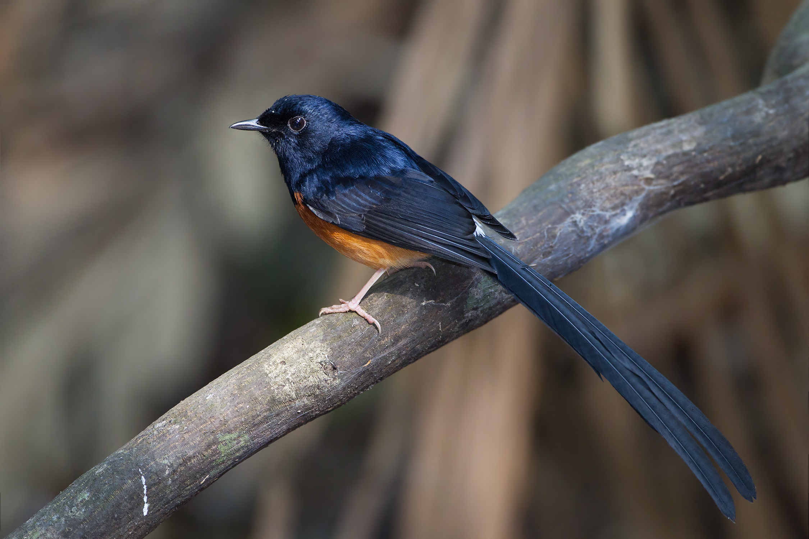
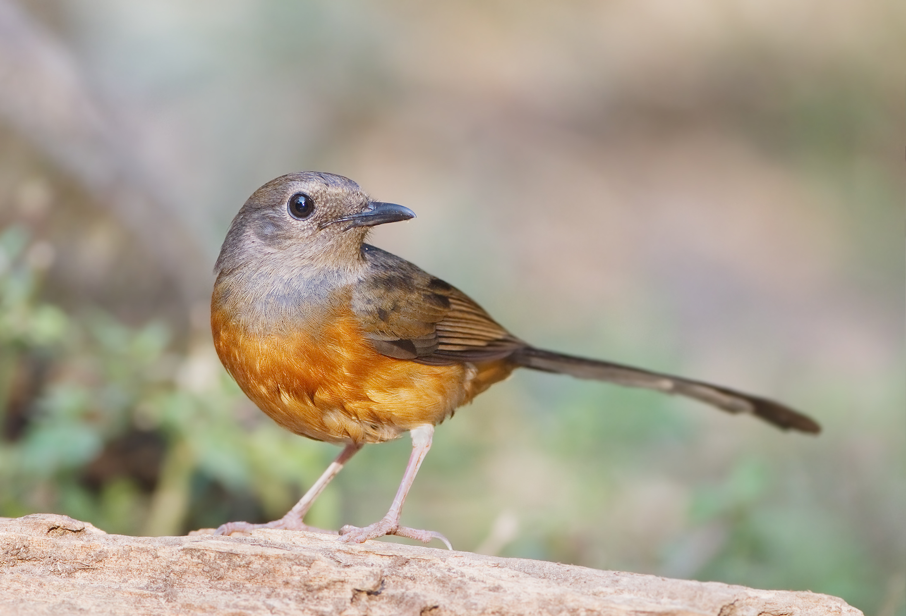
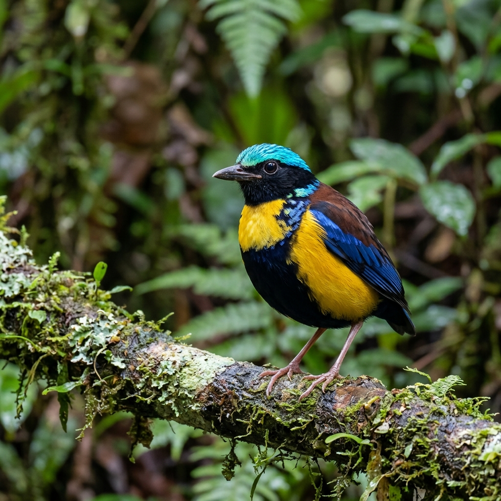
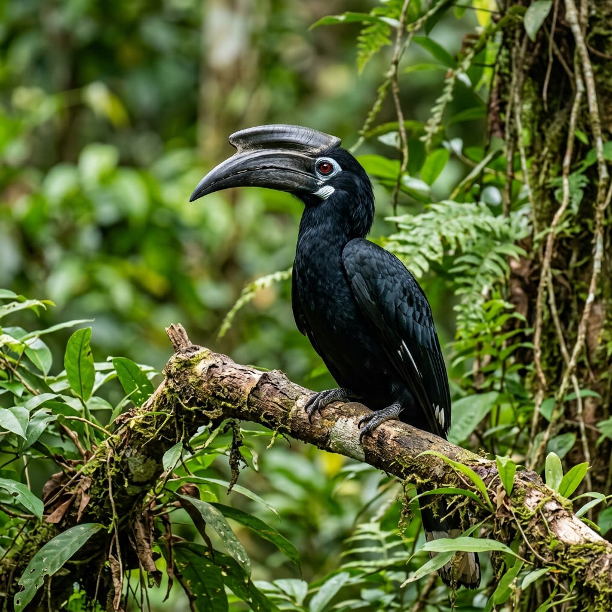
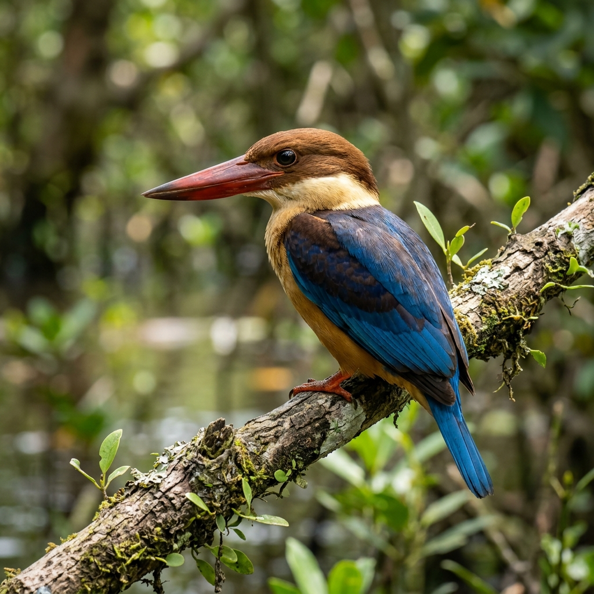
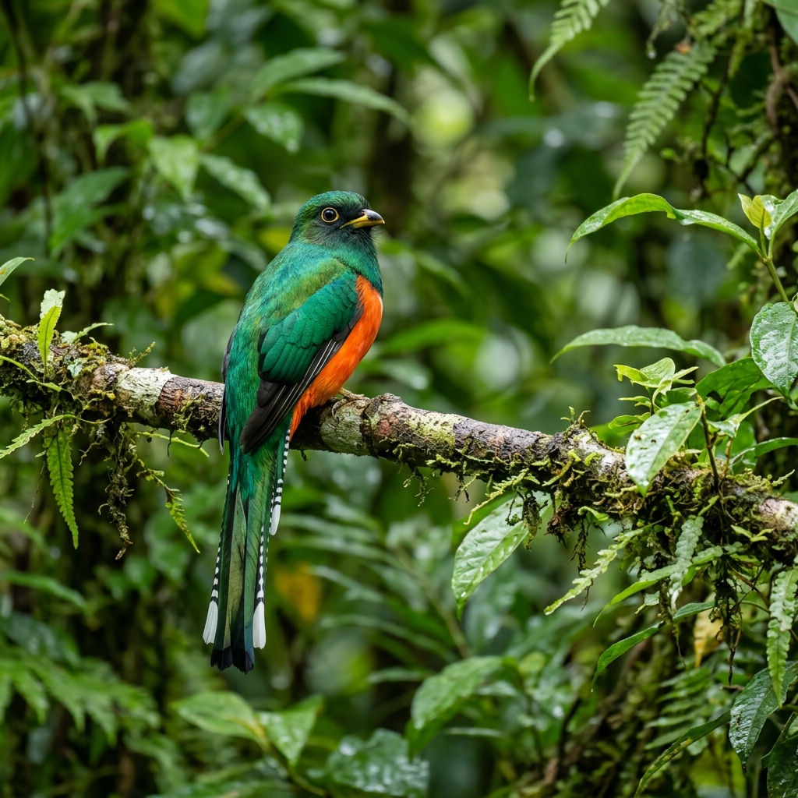

นกท้องถิ่นแห่งกระบี่
Local Birds of Krabi fly animations
นกกางเขนดง (นกบินหลาดง)
Copsychus malabaricus | White-rumped shama
นกกางเขนดง หรือ นกบินหลาดง เป็นนกที่อยู่ในวงศ์ Muscicapidae มีความสัมพันธ์อย่างใกล้ชิดกับนกกางเขนบ้าน แตกต่างกันที่นกกางเขนดงจะมีสีสันบริเวณท้องเป็นสีแดงอมน้ำตาลสดใส และมีสัดส่วนหางยาวกว่าปีกและลำตัวมาก มีเสียงร้องเพลงไพเราะ ชาวตะวันตกที่เข้าไปในอินเดียเรียกว่า "นกไนติงเกลแห่งอินเดีย"
ลักษณะ: ปากหนาตรง ปลายปากบนงุ้มลงเล็กน้อย ปีกมนกลม ขาและนิ้วเท้าใหญ่ แข็งแรงกระโดดได้คล่องแคล่ว มีความยาวจากปลายปากจรดปลายหางประมาณ 28 ซม.

ตัวผู้ (Male)
สีดำเหลือบน้ำเงิน ตัดกับตะโพกสีขาว ท้องสีน้ำตาลแกมแดง

ตัวเมีย (Female)
สีเทาคล้ำ ด้านล่างลำตัวสีส้มอมน้ำตาล หางสั้นกว่าตัวผู้

นกแต้วแล้วท้องดำ
Gurney's Pitta

นกเงือกดำ
Black Hornbill

นกกระเต็นใหญ่ปีกสีน้ำตาล
Brown-winged Kingfisher

นกโพระดกคางแดง
Red-throated Barbet
นกกางเขนน้ำหัวขาว
White-crowned Forktail
นกขุนแผนอกส้ม
Orange-breasted Trogon
นกกินแมลงหัวแดงใหญ่
Chestnut-crowned Babbler
นกปรอดคอลาย
Stripe-throated Bulbul
นกเงือกกรามช้าง
Wreathed Hornbill
นกแต้วแล้วป่าโกงกาง
Mangrove Pitta
นกกระเต็นน้อยแถบอกดำ
Blue-banded Kingfisher
นกบั้งรอกเขียวอกแดง
Chestnut-breasted Malkoha


จุดพบนก (รายงานโดยประชาชน)